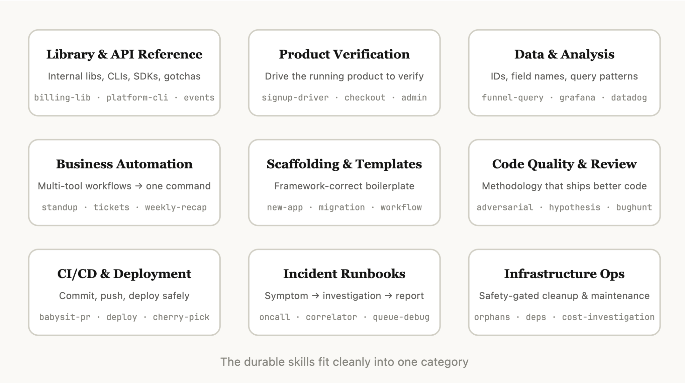
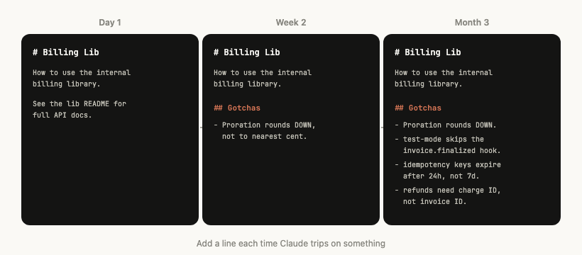
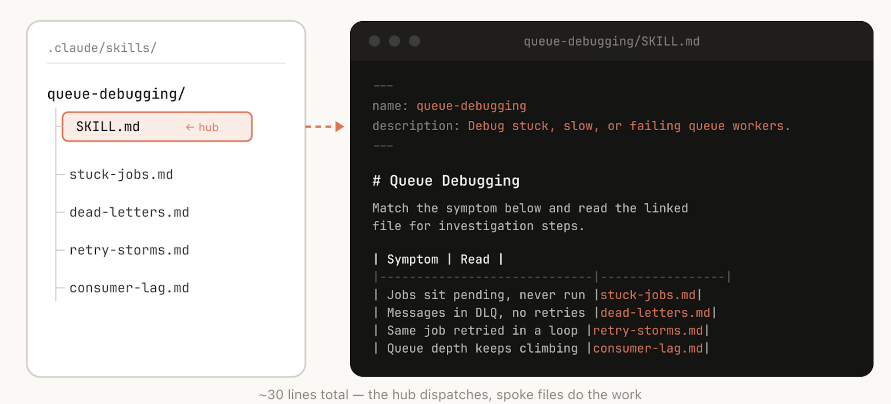
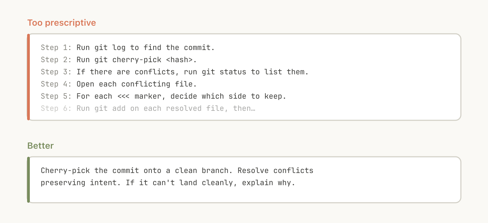
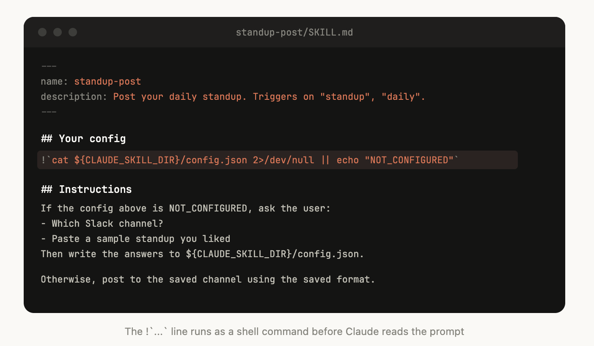
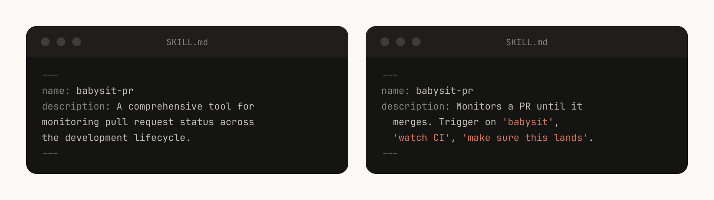
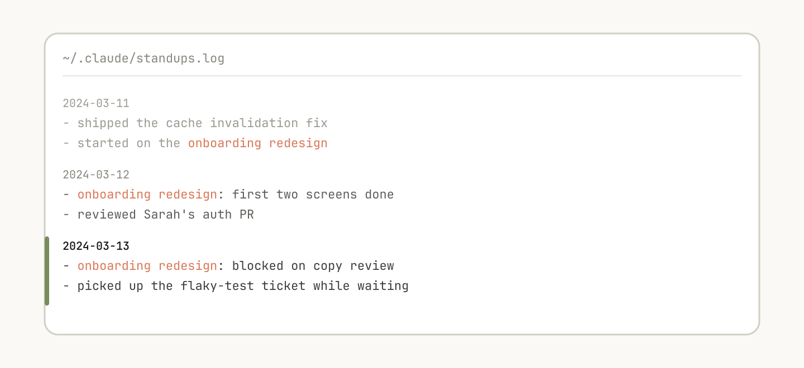
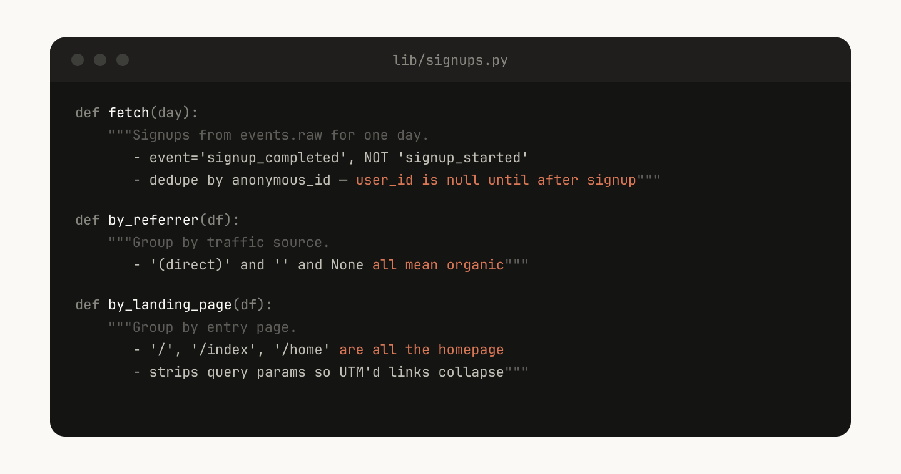
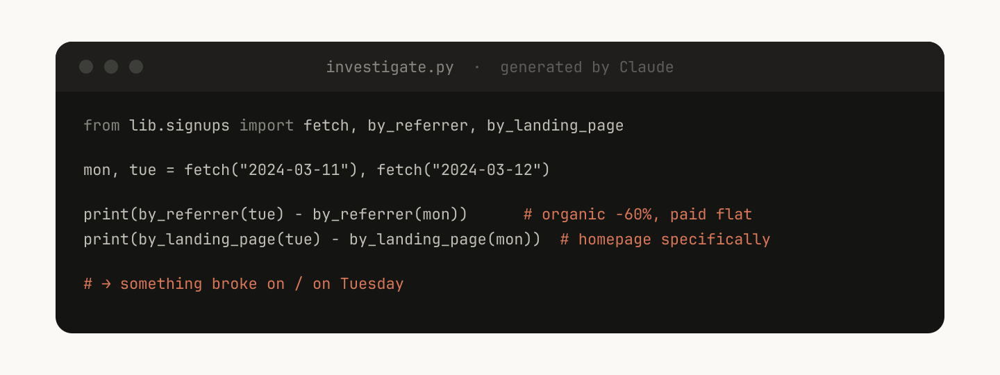

Anthropic 내부에서 수백 개의 스킬을 만들고 확장하며 배운 것들.
스킬(skill)은 Claude Code에서 가장 많이 쓰이는 확장 지점 중 하나가 되었다. 유연하고, 만들기 쉽고, 배포하기 쉽다.
하지만 이 유연함 때문에 무엇이 가장 잘 통하는지 알기도 어렵다. 어떤 종류의 스킬을 만들 가치가 있을까? 스킬은 어떻게 구조화해야 할까? 언제 다른 사람과 공유해야 할까?
우리는 Anthropic에서 Claude Code 스킬을 광범위하게 쓰고 있고, 수백 개가 활발히 사용되고 있다. 이 글은 스킬로 개발 속도를 높이면서 우리가 배운 교훈들이다.
스킬은 에이전트가 발견하고 사용해서 일을 더 정확하고 효율적으로 해내도록 돕는, 지시문·스크립트·리소스가 담긴 폴더다. 이 글은 스킬의 기본을 알고 있다고 가정한다. 처음이라면 Skilljar의 Introduction to agent skills 강좌부터 시작하자.
스킬에 대해 자주 듣는 오해 하나는 스킬이 "그냥 markdown 파일"이라는 것이다. 실제로는 스크립트, 에셋, 데이터 등을 담을 수 있는 폴더이고, 에이전트는 이를 발견하고 탐색하고 조작할 수 있다.
Claude Code에서 스킬은 동적 hook 등록을 포함해 다양한 설정 옵션도 갖고 있다.
우리가 보기에 Claude Code에서 가장 효과적인 스킬 중 상당수는 이런 설정 옵션과 폴더 구조를 잘 활용한다.
Anthropic 내부의 모든 스킬을 목록으로 정리해 보니, 아홉 가지 카테고리로 뭉친다는 것을 알게 됐다. 가장 좋은 스킬은 그중 하나에 깔끔하게 들어맞는다. 너무 많은 것을 하려는 스킬은 여러 카테고리에 걸쳐 있고 에이전트를 혼란스럽게 한다. 이것이 결정적인 목록은 아니지만, 자기 스킬 라이브러리의 빈틈을 찾는 데 유용한 틀이다.

라이브러리, CLI, SDK를 올바르게 쓰는 법을 설명하는 스킬이다. 내부 라이브러리일 수도 있고, Claude Code가 가끔 다루기 어려워하는 흔한 라이브러리일 수도 있다. 이런 스킬에는 참고용 코드 스니펫 폴더와, Claude가 스크립트를 쓸 때 피해야 할 함정(gotcha) 목록이 들어 있는 경우가 많았다.
예시:
billing-lib — 내부 결제 라이브러리: 엣지 케이스, 발등 찍는 지점 등.internal-platform-cli — 내부 CLI 래퍼의 모든 하위 명령과 언제 쓰는지에 대한 예시.sandbox-proxy — 개발 작업을 위한 조직의 egress gateway 설정: 어떤 호스트에 닿을 수 있는지, "connection refused" 오류를 어떻게 디버깅하는지, allowlist 항목을 어떻게 추가하는지.코드가 제대로 동작하는지 테스트하거나 검증하는 방법을 설명하는 스킬이다. 검증을 위해 playwright, tmux 같은 외부 도구와 짝지어지는 경우가 많다.
검증 스킬은 내부에서 Claude의 출력 품질에 가장 측정 가능한 영향을 줬다. 엔지니어 한 명이 일주일을 온전히 검증 스킬을 훌륭하게 만드는 데 쓰는 것도 가치가 있다.
Claude가 자기 출력을 영상으로 녹화하게 해서 정확히 무엇을 테스트했는지 볼 수 있게 하거나, 각 단계에서 상태에 대한 프로그램적 assertion을 강제하는 것 같은 기법을 고려해 보자. 보통 스킬 안에 다양한 스크립트를 넣어서 이렇게 한다.
예시:
signup-flow-driver — headless 브라우저에서 회원가입 → 이메일 인증 → 온보딩을 끝까지 돌리고, 각 단계에서 상태를 assert하는 hook을 갖는다checkout-verifier — Stripe 테스트 카드로 결제 UI를 조작하고, 인보이스가 실제로 올바른 상태에 도달하는지 검증한다tmux-cli-driver — 검증 대상이 TTY를 필요로 하는 인터랙티브 CLI 테스트용데이터와 모니터링 스택에 연결하는 스킬이다. 자격 증명으로 데이터를 가져오는 라이브러리, 특정 대시보드 id 등과 함께, 흔한 워크플로우나 데이터를 얻는 방법에 대한 지시문이 들어갈 수 있다.
예시:
funnel-query — "회원가입 → 활성화 → 유료 전환을 보려면 어떤 이벤트를 join해야 하나"와 함께, 정규 user_id가 실제로 들어 있는 테이블cohort-compare — 두 코호트의 리텐션이나 전환율을 비교하고, 통계적으로 유의한 차이를 표시하고, 세그먼트 정의로 링크한다grafana — datasource UID, 클러스터 이름, 문제 → 대시보드 조회표datadog — 필드 레퍼런스(@request_id 대 trace_id), 서비스 목록, 메트릭 접두사 규칙반복적인 워크플로우를 명령 하나로 자동화하는 스킬이다. 보통 지시문 자체는 꽤 단순하지만, 다른 스킬이나 MCP에 대한 의존성은 더 복잡할 수 있다. 이런 스킬에서는 이전 결과를 로그 파일에 저장해 두면 모델이 일관성을 유지하고 지난 워크플로우 실행을 되돌아보는 데 도움이 된다.
예시:
standup-post — 티켓 트래커, GitHub 활동, 이전 Slack을 모아 → 서식 갖춘 스탠드업 글로, 변경분만create-<ticket-system>-ticket — 스키마(유효한 enum 값, 필수 필드)를 강제하고 생성 후 워크플로우(리뷰어 핑, Slack에 링크)까지weekly-recap — 머지된 PR + 닫힌 티켓 + 배포 → 서식 갖춘 주간 요약 글코드베이스의 특정 기능을 위한 프레임워크 보일러플레이트를 생성하는 스킬이다. 조합 가능한 스크립트와 함께 쓸 수도 있다. 스캐폴딩에 순수하게 코드만으로는 담을 수 없는 자연어 요구사항이 있을 때 특히 유용하다.
예시:
new-<framework>-workflow — 당신의 어노테이션이 붙은 새 서비스/워크플로우/핸들러를 스캐폴딩한다new-migration — 마이그레이션 파일 템플릿과 흔한 함정create-app — 인증, 로깅, 배포 설정이 미리 연결된 새 내부 앱조직 안에서 코드 품질을 강제하고 코드 리뷰를 돕는 스킬이다. 최대한의 견고함을 위해 결정론적 스크립트나 도구를 포함할 수 있다. hook의 일부로, 혹은 GitHub Action 안에서 자동으로 돌리고 싶을 수도 있다.
adversarial-review — 새로운 눈으로 보는 서브에이전트를 띄워 비판하게 하고, 수정을 구현하고, 지적이 사소한 수준으로 줄어들 때까지 반복한다code-style — 코드 스타일을 강제한다. 특히 Claude가 기본적으로 잘 못 지키는 스타일.testing-practices — 테스트를 어떻게 쓰고 무엇을 테스트할지에 대한 지시문.코드베이스 안에서 코드를 가져오고, push하고, 배포하는 것을 돕는 스킬이다. 데이터를 수집하기 위해 다른 스킬을 참조할 수 있다.
예시:
babysit-pr — PR을 감시 → 불안정한 CI 재시도 → 머지 충돌 해결 → auto-merge 활성화deploy-<service> — 빌드 → 스모크 테스트 → 오류율 비교와 함께 점진적 트래픽 롤아웃 → 회귀 시 자동 롤백cherry-pick-prod — 격리된 worktree → cherry-pick → 충돌 해결 → 템플릿으로 PR증상(Slack 스레드, 알림, 오류 시그니처 같은 것)을 받아 여러 도구에 걸친 조사를 거쳐 구조화된 보고서를 만들어 내는 스킬이다.
예시:
<service>-debugging — 트래픽이 가장 많은 서비스들에 대해 증상 → 도구 → 쿼리 패턴을 매핑한다oncall-runner — 알림을 가져오고 → 흔한 용의자들을 확인하고 → 발견 사항을 서식에 맞춘다log-correlator — request ID가 주어지면, 그 요청을 거쳤을 만한 모든 시스템에서 일치하는 로그를 끌어온다일상적인 유지보수와 운영 절차를 수행하는 스킬이다. 그중 일부는 가드레일이 필요한 파괴적인 동작을 포함한다. 이런 스킬은 엔지니어가 중요한 운영 작업에서 모범 사례를 따르기 쉽게 만든다.
예시:
<resource>-orphans — 고아 pod/volume을 찾고 → Slack에 올리고 → 유예 기간 → 사용자 확인 → 연쇄 정리dependency-management — 조직의 의존성 승인 워크플로우cost-investigation — "스토리지/egress 요금이 왜 급증했나"를 구체적인 버킷과 쿼리 패턴과 함께만들 스킬을 정했다면, 어떻게 쓸 것인가? Claude Code 팀이 스킬을 만들며 익힌 모범 사례와 팁, 요령을 소개한다.
Claude는 이미 코딩할 줄 알고 당신의 코드베이스를 읽을 수 있다. Claude가 기본적으로 할 일을 다시 적어 놓은 스킬은 가치는 더하지 않고 컨텍스트만 더한다. 주로 지식을 담은 스킬을 공개한다면, Claude를 평소 사고방식 밖으로 밀어내는 정보에 집중하자.
frontend design 스킬이 좋은 예다. Anthropic의 한 엔지니어가 고객과 함께 반복하며 Claude의 디자인 취향을 개선하려고 만든 것으로, Inter 폰트와 보라색 그라데이션 같은 전형적인 패턴을 피하게 한다.

어떤 스킬에서든 가장 신호가 강한 내용은 Gotchas 섹션이다. 이 섹션은 Claude가 당신의 스킬을 쓰다 부딪히는 흔한 실패 지점들로 쌓아 올려야 한다. 이상적으로는 시간이 지나면서 스킬을 갱신해 이런 함정들을 담아 나간다.
예를 들면:
subscriptions 테이블은 append-only다. 원하는 행은 created_at이 가장 최근인 것이 아니라 version이 가장 높은 것이다."@request_id, 결제 서비스에서는 trace_id라고 불린다. 같은 값이다."payment_events를 확인하라."
앞서 말했듯 스킬은 폴더이지 markdown 파일 하나가 아니다. 파일 시스템 전체를 컨텍스트 엔지니어링과 점진적 공개(progressive disclosure)의 한 형태로 생각해야 한다. 스킬에 어떤 파일이 있는지 Claude에게 알려주면, 적절한 때에 읽을 것이다.
점진적 공개의 가장 단순한 형태는 Claude가 쓸 다른 markdown 파일을 가리키는 것이다. 예를 들어 상세한 함수 시그니처와 사용 예시를 references/api.md로 분리할 수 있다.
또 다른 예: 최종 출력이 markdown 파일이라면, 복사해서 쓸 템플릿 파일을 assets/에 넣어 둘 수 있다.
레퍼런스, 스크립트, 예시 등의 폴더를 둘 수 있고, 이것들이 Claude가 더 효과적으로 일하도록 돕는다.
Claude는 대체로 당신의 지시를 따르려 하고, 스킬은 워낙 재사용되기 때문에 지시가 너무 구체적이지 않도록 조심해야 한다. Claude에게 필요한 정보는 주되, 상황에 맞춰 적응할 유연성을 주자.
예를 들면:


어떤 스킬은 사용자로부터 컨텍스트를 받아 설정해야 할 수 있다. 예를 들어 스탠드업을 Slack에 올리는 스킬을 만든다면, 어느 Slack 채널에 올릴지 Claude가 물어보게 하고 싶을 것이다.
이를 위한 좋은 패턴은 위 예시처럼 스킬 디렉터리 안의 config.json 파일에 설정 정보를 저장하는 것이다. 설정이 되어 있지 않으면 에이전트가 사용자에게 정보를 물어볼 수 있다.
에이전트가 구조화된 객관식 질문을 제시하게 하고 싶다면, AskUserQuestion 도구를 쓰라고 Claude에게 지시할 수 있다.
Claude Code가 세션을 시작하면, 사용 가능한 모든 스킬의 목록을 description과 함께 만든다. Claude는 이 목록을 훑어 "이 요청에 맞는 스킬이 있나?"를 판단한다. 즉 description 필드는 요약이 아니라, 이 스킬을 언제 발동할지에 대한 설명이다.


어떤 스킬은 안에 데이터를 저장해 일종의 메모리를 가질 수 있다. append-only 텍스트 로그 파일이나 JSON 파일처럼 단순한 것에서부터 SQLite 데이터베이스처럼 복잡한 것까지, 어디에든 데이터를 저장할 수 있다.
예를 들어 standup-post 스킬은 지금까지 쓴 모든 글을 standups.log에 보관할 수 있다. 그러면 다음에 실행할 때 Claude가 자기 이력을 읽고 어제 이후 무엇이 바뀌었는지 알 수 있다.
환경 변수 ${CLAUDE_PLUGIN_DATA}로 데이터를 저장할 안정적인 디렉터리를 얻을 수 있다. 스킬에서 데이터를 영속화하는 방법은 여기서 더 읽어보자: https://code.claude.com/docs/en/plugins-reference#persistent-data-directory.
Claude에게 줄 수 있는 가장 강력한 도구 중 하나는 코드다. Claude에게 스크립트와 라이브러리를 주면, 보일러플레이트를 다시 만드는 대신 조합, 즉 다음에 무엇을 할지 결정하는 데 턴을 쓸 수 있다.
예를 들어 data-science 스킬에 이벤트 소스에서 데이터를 가져오는 함수 라이브러리를 둘 수 있다. Claude가 복잡한 분석을 하려면, 이런 helper 함수 세트를 줄 수 있다:

그러면 Claude는 "화요일에 무슨 일이 있었지?" 같은 프롬프트에 대해, 이 기능을 조합해 더 고급 분석을 하는 스크립트를 즉석에서 생성할 수 있다.

스킬에는 스킬이 호출될 때만 활성화되고 세션 동안만 유지되는 hook을 넣을 수 있다. 항상 돌리고 싶지는 않지만 가끔은 아주 유용한, 더 의견이 강한 hook에 이것을 쓰자.
예를 들면:
/careful — Bash에 대한 PreToolUse matcher로 rm -rf, DROP TABLE, force-push, kubectl delete를 막는다. 프로덕션을 건드린다는 것을 알 때만 원하는 것이고, 항상 켜 두면 미칠 지경이 될 것이다./freeze — 특정 디렉터리 밖의 모든 Edit/Write를 막는다. 디버깅할 때 유용하다: "로그를 추가하고 싶은데 자꾸 실수로 관련 없는 코드를 '고쳐' 버린다."스킬의 가장 큰 이점 중 하나는 팀의 나머지 사람들과 공유할 수 있다는 것이다.
다른 사람과 스킬을 공유하는 방법은 두 가지가 있다:
./.claude/skills 아래)비교적 적은 수의 레포에서 일하는 작은 팀에는 스킬을 레포에 체크인하는 방식이 잘 맞는다. 하지만 체크인된 스킬 하나하나가 모델의 컨텍스트를 조금씩 더한다. 규모가 커지면, 내부 plugin marketplace를 통해 스킬을 배포하고 팀원이 어떤 것을 설치할지 직접 고르게 할 수 있으며, 설정 흐름도 넣을 수 있다.
어떤 스킬을 marketplace에 넣을지 어떻게 정할까? 사람들은 어떻게 제출할까?
Anthropic에는 이를 결정하는 중앙 팀이 없다. 대신 가장 유용한 스킬이 자연스럽게 드러나도록 한다. 누군가 사람들이 써 봤으면 하는 스킬이 있으면, GitHub의 샌드박스 폴더에 올리고 Slack이나 다른 포럼에서 사람들에게 알린다.
스킬이 어느 정도 호응을 얻으면(이 판단은 스킬 소유자의 몫이다), marketplace로 옮기는 PR을 올릴 수 있다.
서로 의존하는 스킬을 두고 싶을 수 있다. 예를 들어 파일을 업로드하는 파일 업로드 스킬과, CSV를 만들어 업로드하는 CSV 생성 스킬이 있을 수 있다. 이런 종류의 의존성 관리는 아직 marketplace나 스킬에 기본으로 내장되어 있지 않지만, 다른 스킬을 이름으로 참조하기만 하면 설치되어 있는 경우 모델이 그것을 호출한다.
스킬이 어떻게 쓰이고 있는지 이해하기 위해, 우리는 회사 안에서 스킬 사용을 기록하는 PreToolUse hook을 쓴다(예시 코드는 여기). 이렇게 하면 인기 있는 스킬이나 기대보다 덜 발동되는 스킬을 찾을 수 있다.
스킬 모범 사례는 아직 진화 중이다. 우리의 가장 좋은 스킬 대부분은 몇 줄과 함정 하나로 시작했고, Claude가 새 엣지 케이스에 부딪힐 때마다 사람들이 계속 덧붙이면서 더 좋아졌다.
스킬을 이해하는 가장 좋은 방법은 시작하고, 실험하고, 무엇이 자신에게 통하는지 보는 것이다.
이 글은 Anthropic에서 Claude Code를 담당하는 Member of Technical Staff, Thariq Shihipar가 썼다.